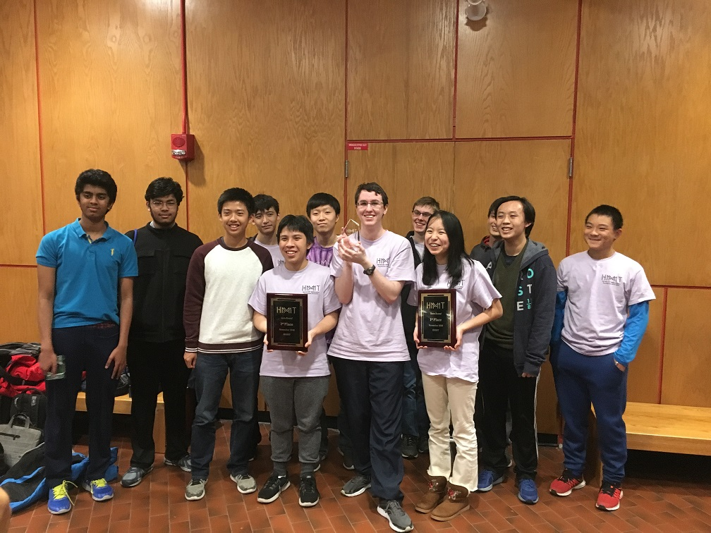

The Texas HMMT November 2018 Team
Texas Tornado
Andy Jiang
Jay Leeds (Captain)
Richard Luo
Isabella Quan
Christopher Wu
Alex Yi
Texas Thunder
Ayon Das
Nir Elber
Rithvik Ganesh
Alex Kim
Joshua Kolenbrander (Captain)
Joshua Pate
Individual results
Jay Leeds placed 2nd individually and 1st in General Round.
Rithvik Ganesh placed 16th individually and 7th in General Round.
Alex Yi placed 31st individually and 20th in General Round.
Isabella Quan placed 34th individually and 27th in Theme Round.
Team results
Texas Tornado placed 1st in Team, Guts, and Sweepstakes.
Texas Thunder placed 17th in Team and 18th in Sweepstakes.
Both teams were guaranteed acceptance to the 2019 meet.
The award-winning team

(Back to Main Page)